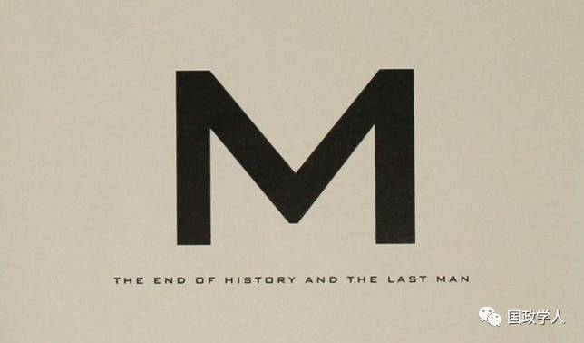
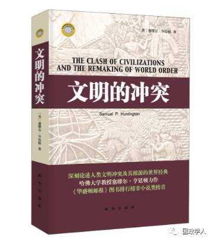
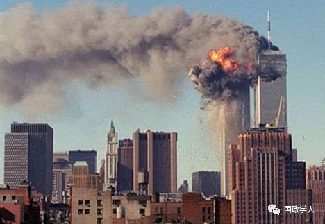
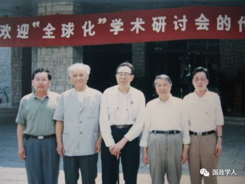
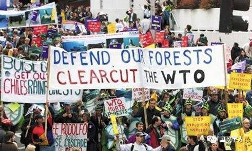

收录于合集
简
黄军甫
东华大学人文学院副教授、博士。
孙泽 锟
东华大学人文学院研究生。
本文经国政学人公众号首发，转载请注明来处！
内容摘要
冷战格局瓦解后，国际秩序发生了结构性变化，国际政治叙事旧的范式不再有效，历史终结论、文明冲突论等新的范式相继出现。实践证明，历史终结论无论内容还是方法上都是错误的。文明冲突论虽然在国际政治若干问题的解读上是有效的，但它基于西方中心主义的价值观，必然导致对众多问题的误判。 而在众多范式中，立足于唯物史观的全球化理论，在后冷战时期是解读国际政治现象的有效范式。
关键词
研究范式 国际秩序 历史终结
文明冲突 全球化
冷战的结束打破了超级大国之间的平衡，世界进人了一个更加无序的状态。这一事件必然引发全球秩序、国家间交往模式、大国安全战略及对外政策等的颠覆性变化。 国际政治学者自此必须对变化了的世界以新的思维、新的 方法和新的视角进行解读。用亨廷顿的话讲，“人们需要 新的框架理解世界政治” 。亨廷顿这一所谓新的理解框 架其实就是托马斯·库恩所说的新的理论范式。借助于某 种理论范式研究现象世界，虽然可能会因为偏好导致某些 问题结论上的偏差，甚至会漏掉研究对象中某些显而易见的材料和事实，但是如果没有理论范式的指导，任何研究对象只能是看似毫无逻辑关系的材料堆砌。
然而，在学术史上，理论范式是经常转换的。因为，随着实践的发展，知识的增长、新的事实的不断丰富等，都可能使原先有用的研究范式不再有效，或有效性减弱。冷战格局的瓦解显然使国际政治研究的旧范式不再有效， 以意识形态对抗、制度对抗及其他基于冷战语境的进路, 完全不能说明后冷战时期国际政治的众多问题。于是，冷战格局瓦解以来，国际政治的叙事进人了“战国时期”， 对若干重大的国际政治问题，学者和政治家众说纷纭，各执一端，莫衷一是。较有影响的，在亨廷顿看来可以称为研究范式的有以下几种：弗朗西斯·福山为代表的历史终结论，一些学者基于民族主义和地缘政治利益诉求的“两 个世界论”，囿于传统知识结构和思维的现实主义、国家主义范式，以及以布热津斯基、莫伊尼汉等国际政治的学 术名家所坚持的“完全的混乱”论。当然，亨廷顿归纳这些后冷战时期的若干理论范式，目的是为了论证他自认为最有效的文明冲突叙事。
历史终结论：内容和方法的双重误判
后冷战时期国际政治的所有研究范式中，最早引起人 们广泛关注，也是争议最大的就是福山的历史终结论。他在《历史的终结》一书的扉页上赫然写着“自由与民主的理念已无可匹敌，历史的演进过程已走向完成”，并在该书的序言中声称，“自由民主可能形成人类意识形态的终点与人类统治的最后阶段” 。而在该书的最后一章，福山更是狂妄地指出：“除了自由主义，人类再找不到更高层次的社会组织。”
弗朗西斯 ·福山（Francis Fukuyama），日裔美籍学者。哈佛大学政治学博士，现任约翰霍普金斯大学、保罗·尼采高级国际问题研究院、舒华兹讲座、国际政治经济学教授，曾师从塞缪尔·亨廷顿。著有《历史之终结与最后一人》、《信任》、《政治秩序的起源：从前人类时代到法国大革命》等。他的第一本著作《历史之终结与最后一人》让他一举成名。
冷战格局瓦解以来的历史已经证明，福山的结论与历史事实南辕北辙。他所渴望的历史没有终结，“欢欣而和谐”的世界境况也没有到来，历史展现出的完全是与他的预期相反的图景。被他宣判死刑的社会主义运动在经历了苏东巨变后，经一段时期的低潮和蛰伏，触底反弹，展示出强劲的复兴势头 。当然，这里的社会主义复兴并非苏联模式意义上的社会主义复兴。《全球通史》一书所界定的，与自由主义相伴而生的社会主义，作为一种现代性思潮， 无论是表现为一种运动、实践，还是一种理念，在后冷战时期始终是自由主义的批判、解构力量。并且，由于后冷战时期自由主义一度不计后果地攻城掠地，在国际政治、 经济、文化领域不断制造矛盾，因而不断遭遇困境。2008年美国的次贷危机，以及随之而来的欧债危机最终导致了全球性的经济、政治动荡。所谓的华盛顿共识宣告破产。
这一现象从相反意义上，至少凸显了社会主义方案的道德优势。所以，2008年次贷危机之后，包括《资本论》在内的社会主义著作和文献一时洛阳纸贵。即便就马克思主义谱系而论，社会主义在后冷战时期的表现也是可圈可点的。在原苏东国家，共产党纷纷恢复活动，并在各自国家宪法框架内积极从事反对现政权，争取议会多数的斗争。俄罗斯共产党长期居于议会第二大党的地位，并在 俄罗斯第二届总统大选中险些获胜。摩尔多瓦共产党甚至一度掌权。经历了社会主义逆境考验并且一直坚守社会主义阵地的中国、越南等国，更是经过凤凰涅槃式自我变革而浴火重生。中国在后冷战时期经济长期两位数 增长，在步人新世纪之初，迅速超越日本，成了全球第二大经济体。一时间，中国模式、北京共识、中国奇迹等声音不绝于耳。

《历史的终结与最后的人》（理想国译丛版）
福山在《历史的终结》里宣判社会主义死刑的同时， 不忘记勾勒后冷战时代的“和谐欢欣社会”的美景。然而 事实给他当头一棒。冷战格局的瓦解，由于旧有的平衡和均势不在，被压抑已久的国际极端政治力量凸显，纷争不断，狼烟四起。更令人头疼的是，后冷战时期，由于自由主义在全球展示力量，西方国家主导的全球治理机制的不 当作为，使得恐怖主义、大规模的移民潮、流行性疾病的传播、杀伤性武器（包括核武器、核技术）的扩散、对地球资源的过度开发，以及人类居住环境的恶化等成了全球性问题。
福山显然误判了后冷战时期的历史走势。就方法论而言，这种误判源于哈耶克意义上的“致命自负”。自启蒙运动以来，理性之光不断照亮人类思想的每个黑暗角落，任何价值、规则都必须接受理性法庭的审判。于是，人们借助于启蒙理性不断在科学、技术领域推进，并最终催生了工业革命。工业革命的社会后果是资本主义生产方式在 欧美国家的确立，及基于理性计算的会计制度和科层官僚制度的广泛传播。启蒙理性的凯歌行进最终带来了资本主义的无限繁荣。正是在这一意义上，马克思、恩格斯讲：“资产阶级在它的不到一百年阶级统治中创造的生产力比以往一切世代创造的全部生产力还要多，还要大。”
然而，启蒙主义的成就却给不少人，尤其是为学者带来了普遍的幻觉，他们认为人的理性是无所不能的。理性 不但可以参透历史，更可以把握未来。黑格尔借助于他的 “绝对观念的外化”，孔德通过把人类社会看成是和物理学 动力机制同构的方法，而达尔文的信奉者则直接把进化论哲学用于人类社会，从而建构了一种颇为盛行的简单化的、直线的、单一的及“进步的”历史观。“这样就稳固 地建立了对进步的迷信……对进步的迷信曾享有独特的幸 运，至少有三种哲学——黑格尔的、孔德的和达尔文 的——成为它的奴隶。” 这种历史观也即我们通常讲的 “决定论”和“目的论”历史观。这种历史观不承认差异，不承认多样性及多元价值。它像对待天文学、物理学一样 对待历史学。这一历史观的真正意义是宣扬西方中心论, 逻辑起点和终点都是西方。
福山
不少人试图从马克思的唯物史观推论出马克思也属于 这一历史观。其实那是对马克思的误读。不错，马克思一 度通过对欧洲历史材料的梳理、研究发现欧洲社会从原始社会、奴隶社会、封建社会到资本主义社会演进的脉络， 并一度认为它具有超越地域的普遍性。但马克思在1871 年巴黎公社革命以后，通过对俄罗斯、印度及中国的研究 发现了完全不同于欧洲的社会发展模式。马克思因而告诫 欧洲以外的革命者，“资本主义制度的基础是生产者与生 产资料的彻底分离”，“整个发展的基础是对农民的剥夺”， 因此，“这一运动的历史必然性明确地限于西欧各国”。
福山虽然自我标榜为自由主义者，但在认识论上却是十足的唯理主义者。唯理主义不承认理性的限度，认识不到无论自然界还是人类社会都存在“理性不及的领域”。 就人类社会而言，因为每个认识主体同时又是构成客体的基本元素，所以，主体每一个判断、断语都改变着客体， 显现出一种俄狄浦斯效应。更何况，历史人物、历史事件 的出现通常都是偶然的，历史的脉络很难连续，更是难以 重复的。不可重复便不具有必然性。所以，卡尔·波普尔断言：虽然借助于科学手段可以解释某种历史现象，发现某些历史趋势，但无法总体上把握所谓历史规律，因而就不存在自然科学领域的科学预测。“我已经表明：由于严格的逻辑理由，我们不可能预告历史的未来进程。” 由此可见，虽然福山依据历史终结论不容置疑地宣告了后冷战时期自由主义的必然胜利，但实践证明，他的愿望落空了 。
文明冲突论：西方中心主义者的孤鸿悲鸣
继历史终结论理论范式之后，后冷战时期最有影响的国际政治研究范式，当属亨廷顿的“文明的冲突论”。在《文明的冲突与世界秩序的重建》一书中，亨廷顿逐一审视了包括历史终结论在内的四种国际政治研究范式，认为 “这四个范式中的每一个都显示了现实主义和简化两方面 的结合。每一个都含有自身的缺点和局限” ，也即它们都不能有效地解读后冷战时期的国际现象。因此，必须适时地实现国际政治叙事的范式转换。亨廷顿声称:“我们所遇到的挑战是如何在一个相似的抽象思想层面上，提出一个比其他范式更能说明更关键的事件和提供对趋势的更深人理解的范式。” 亨廷顿所提供并运用的范式，即人们 耳熟能详的文明冲突论。亨廷顿充满自信地讲:“从七八个文明来看待世界，可避免许多困难……它提供了一个易于把握和易于理解的框架，可以用来理解世界，在越来越多的冲突中区分不重要的和重要的，预测未来的发展，为政策制定者提供指导路线。”
萨缪尔·亨廷顿 （Huntington·Samuel·P 1927－2008年）美国当代政治学家，因主张《文明冲突论》而闻名于世。
与历史终结论者的云山雾罩、信口雌黄不同，亨廷顿的文明冲突论是从前人思想材料出发，借助于大量的历史事实所归纳的研究后冷战时期国际政治，尤其是国际冲突的理论。它的学术价值因而是显而易见的。 亨廷顿认为，文明是一种最广泛的文化实体，是对人最高的文化归类，是人的认同的最广范围。它和文化一样涉及生活其中的民族的生活方式、心理习惯，包括价值、规则、体制、实践及代代相传的思维模式。文明决不是单一的，而是多元共存的。虽然构成文明的元素很多，但最重要的因素是宗教。文明的冲突因而给人一种宗教冲突的表象 。亨廷顿通过对汤因比和斯宾格勒所界定的自古至今存在或可能存在 的文明单位的梳理，认为历史上至少存在过12种文明， 其中7种文明已不复存在，5种文明仍旧存在。即所谓的中华文明、日本文明、印度文明、伊斯兰文明和西方文 明。如果把东正教文明、拉丁美洲文明从西方基督教文明 中分立出来，并把非洲也视为一种可能的文明，那么当下 世界便存在8种文明。由于“文明没有明确的边界， 也没有精确的起点和终点” ，每一种文明都自认为是普 世的，而世上恰恰并不存在普世文明。所以文明之间差异 极大，互不买账，“众神喧哗”。更要的是，自1500年以来，西方文明借助于资本和技术的全球扩张，对它之外的 所有文明产生了持续的压力。后冷战时期这种压力有增无 减。西方的压力虽然一定程度上得到了非西方文明的正面 回应，但同时也普遍唤醒了它们的族群意识、宗教意识、 对自身文明的认同意识，以及对西方的普遍怨恨。加之冷战格局瓦解所导致的政治、经济的无序，全球化所导致的 各国发展的不平衡，尤其是中华文明圈经济增长及伊斯兰 国家人口的飞速增长等，客观上增强了非西方文明的文化自信。所以，后冷战时期，每个文明之间，尤其是非西方 文明和西方文明的冲突愈演愈烈。亨廷顿还根据伊斯兰教 和基督教的教义特点（都是一神教，都宣称是普世的， 都宣扬目的论的历史观等）、二者在历史上的恩怨情仇， 以及后冷战时期二者的安全和利益纠葛，认为伊斯兰文 明是构成文明冲突的主要因素。他根据统计数字得出结 论:“涉及穆斯林的文明冲突是所有文明冲突的三倍。伊斯兰内部的冲突也远远超过其他任何文明的冲突。” 如 果说亨廷顿对伊斯兰文明的判断尚有事实根据的话，那 么，他预判未来中华文明或者儒教文明是另外一个构成文明冲突的主要因素则是毫无道理的。他不仅认为“美国 和中国几乎在所有重大政策问题上都没有共同的目标”， “美中冲突在很大程度上是基于两个社会的文化差异” , 而且煞有介事地告诫世人，未来儒教文明将会与伊斯兰文明联手对付西方。

《文明的冲突》新华出版社
不可否认，亨廷顿的文明冲突论一定程度上是建立在事实和数据基础上的，并有厚重的比较政治学的学理支撑，他据以得出的某些结论是有价值的。尤其令人称绝的是，该理论问世后不久，“9·11”事件的发生，此后带有宗教背景的恐怖袭击事件的频发，亨廷顿对穆斯林世界大量移民问题的出现、克里米亚的分立及东西乌克兰的分裂等的预判，都证明了文明冲突论的部分有效性。但同样不可否认的是，该理论作为一种研究范式存在着重大缺陷。 从而使它不仅漏掉了作为一种表象的文明背后的众多事实，诸如地缘政治环境、制度、利益冲突、国家安全等， 而且，根据这种范式得出的不少结论也是经不起质疑的。 比如，中华文明和西方文明必然激烈对抗的事实根据何在？在汤因比看来作为儒家文明圈的日本何以被亨廷顿界定为一个独立文明？印度文明、拉丁美洲文明、东正教文明既然可以作为西方文明的盟友，日本文明为何必然与中华文明冲突？

该理论问世后不久，“9·11”事件的发生，此后带有宗教背景的恐怖袭击事件的频发，亨廷顿对穆斯林世界大量移民问题的出现、克里米亚的分立及东西乌克兰的分裂等的预判，都证明了文明冲突论的部分有效性。
其实，后冷战时期的国际冲突，虽然大多带有文明冲突的影子，但其背后更多的是利益冲突。亨廷顿对所谓的文明冲突无疑是恐惧的。这种恐惧事实上是担心欧洲，尤其是美国中心地位的丧失。只是有碍于“政治正确”的戒律，亨廷顿不敢公开袒露内心的怨恨，所以，借助于中性的文明概念，遮遮掩掩，欲言又止，明修栈道，暗度陈仓。正如李慎之先生所言，亨廷顿“这些没有明白说透的话，简单说起来，其实就是，西方把现代化教给了世界，然而其人数却在世界总人口中的比例越来越萎缩，不但已远远被非西方的人口所超过，而且除非发生常情无法预料的激变，还有最后被淹没的危险” 。亨廷顿的文明冲突论的喧嚣其实是基于恐惧的孤鸿悲鸣 。
全球化及其困境：唯物史观理论的现实映像
后冷战时期国际政治的上述两个范式，显然不能准确描述现象世界。而亨廷顿所提及的诸如国家主义、现实主义、“完全的混乱”，以及通行欧洲学界200多年的 “左、右”二分法等范式，都只能在个别问题上有效，对后冷战时期的的国际政治构不成宏大叙事。既然冷战后影响人类的最大事件是全面的全球化，那么，我们只能在全球化的语境下，借助于马克思主义的唯物史观解读 当下的国际问题。这可以称之为全球化范式。但全球化理论是多种多样的，这里所讲的全球化范式是以唯物史观为指导的。

左起第三位，李慎之（1923—2003），哲学家、社会学家。无锡人，曾任周恩来外交秘书、中国社会科学院副院长兼美国研究所所长。资深新闻人，著名的国际问题专家，二十世纪下半叶中国自由主义思想的代表人物。
全球化是在资本力量的推动下世界经济、技术、制度、文化不断交融的动态过程。据李慎之先生考证，全球化的概念最早是西方学者莱维特在其《市场全球化》一书中提出的，上世纪八九十年代在国际上广泛流行。然而，全球化作为一种现象则存在已久。李慎之认为它始于 1492年哥伦布发现新大陆。当然也有学者认为真正的全球化是冷战结束后的事情。 事实上，如果把全球化看作 现代性的因素，看作资本冲破地域的、民族的、国家的界线向全球弥散扩张的过程，那么，显而易见，它是从资本主义生产方式在主要西方国家确立开始的。而资本主义生 产方式是建立在工业革命基础之上的。因此，无论是从逻辑还是从现象看，全球化都是始于工业革命的。马克思、恩格斯其实也是在这一意义上描述全球化现象的。他们对全球化现象的判断基于对资本逐利特性的体认。马克思讲:“资本来到世间，从头到脚，每个毛孔都滴着血和肮脏 的东西。”马克思在概括了资本的道德特性后，借用 《评论家季刊》的话，进一步概括了它的逐利本性:“资本害怕没有利润或利润太少，就像自然界害怕真空一样。一 旦有适当的利润，资本就胆大起来。如果有10%的利润， 它就保证到处使用；有20%的利润，它就活跃起来；有50%的利润，它就铤而走险；为了100%的利润，它就敢践踏一切人间法律；有300%的利润，它就敢犯任何罪 行，甚至冒绞首的风险。”资本的这一特性，使得它会 在任何环境下不顾一切地为自己开辟道路，并不断地从经 济的中心地带向四处扩张。“市场总是在扩大，需求总是在增加”，“资产阶级，由于开拓了世界市场，使一切国家的生产和消费都成为世界性了”，“资产阶级，由于一切生产工具的迅速改进，由于交通的极其便利，把一切民族都卷进到文明中来了”，于是，“正像它使乡村从属于 城市一样……使东方从属于西方”。当然，“物质的生产是如此，精神的生产也是如此。各民族的精神产品成了公共财产” 。显然，马克思、恩格斯描述的全球化虽然是全球化的早期阶段，但已经涵盖了今天全球化的几乎全部特征。
资本推动的全球化尽管有客观的物质基础，但它并非表现为一个必然的历史进程。事实上，近代以来已经缓慢发展的全球化，在1910年代伴随着欧美世界的危机而开 始遭遇挫折。而1929~1933年的大萧条及相伴而来的资本 主义世界的全面危机，使全球化戛然而止。二战以后，虽然全球化被接续，但东西方的冷战对抗又使得全球被人为地分割为互不通约的两个平行市场。 真正意义上的全球化是从冷战之后开始的。无论最初人们对全球化的态度如何，但至少是2008年之前，几乎所有卷进全球化浪潮的民族和国家都客观上从中受益。但全球化毕竟是双刃剑， 加之引领全球化的大国及国际资本集团的贪婪、自私，全球化的负面效应日益显现。2008年美国的金融危机，随之而来的欧债危机，中东、北非的政治危机终于把全球化的一切负面问题呈现出来 。
2008年美国次贷危机爆发并迅速席卷全球，暴露了全球化进程中的负面因素。
既然全球化是有问题的，有责任的大国及有良知的各路精英，就应该勇于修正全球化的方案，在新的语境下呈现符合现实的新的全球化叙事，但全球化的受益者，无论集团还是个人，都不愿正视现实，更不愿改变既定的规则、让渡部分利益。于是，反全球化由最初的暗流涌动，在美国金融危机后逐渐形成了发达国家草根民众和不发达 国家多数民众的滔滔民意，民意最终催发了一波声势浩大的反全球化的浪潮。中东地区的内乱及难民潮、东欧国家民粹主义政党的纷纷上台，尤其是最近的英国脱欧公投、 特朗普胜选等无疑都是反全球化力量的展示。冷战结束以来的全球化遇挫已经是不争的事实。

西雅图反全球化大游行
单纯从经济角度来看，全球化遇挫没有什么可怕，可怕的是，在科技如此发达、信息传递如此迅速的今天，全球化遇挫必然导致人类社会秩序和心灵秩序的双重颠覆 。 而当下全球碎片化的知识样态和众神喧哗的价值结构，尚无力重构新的人类秩序。文明的冲突、民粹主义及民族主义等极端政治思潮的喧嚣、虚拟世界裹挟现象世界的现状等，在很长时间内都将是全球政治生活的常态。未来世界注定是不安宁的。
所以，必须阻止全球化的逆转，重建人类巴比伦塔。 而对话、沟通才是达到这一目的的有效手段。人类在对话、沟通中才能寻求共识，才能形成基本的全球伦理。在这一过程中，我们有责任呈现中国的全球化叙事，提供中国的全球化方案 。 （文章内容略有删节，具体 注释请见刊物文章。本文经国政学人公众号首发，转载请注明来处！）
文章来源： 《探索与争鸣》2016年12期
筛选： 晞哲 编辑： 里仝
声 明
国政学人微信公众平台系非盈利学术平台。建立初衷是方便广大学人进行学术研究，促进学术的传播和交流，不做任何商业用途。如有任何权利问题，请直接与我们联系。